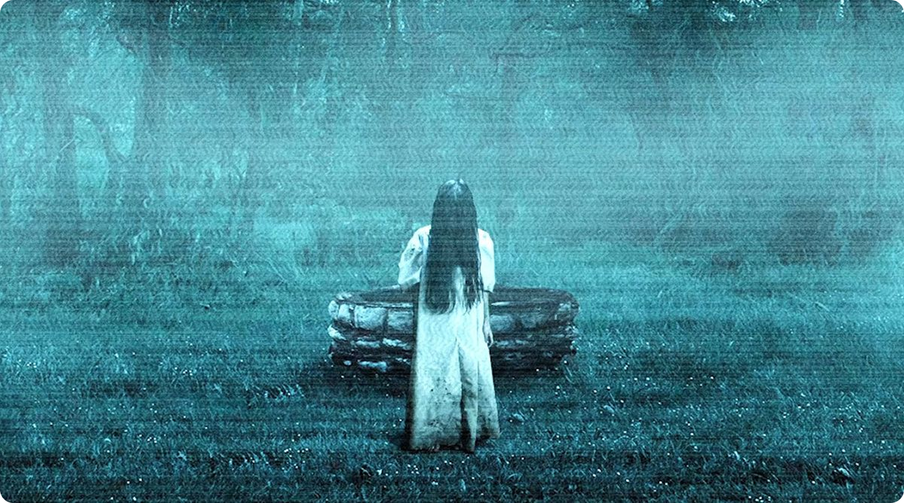
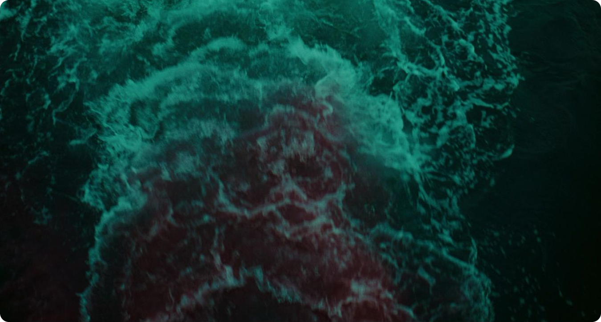
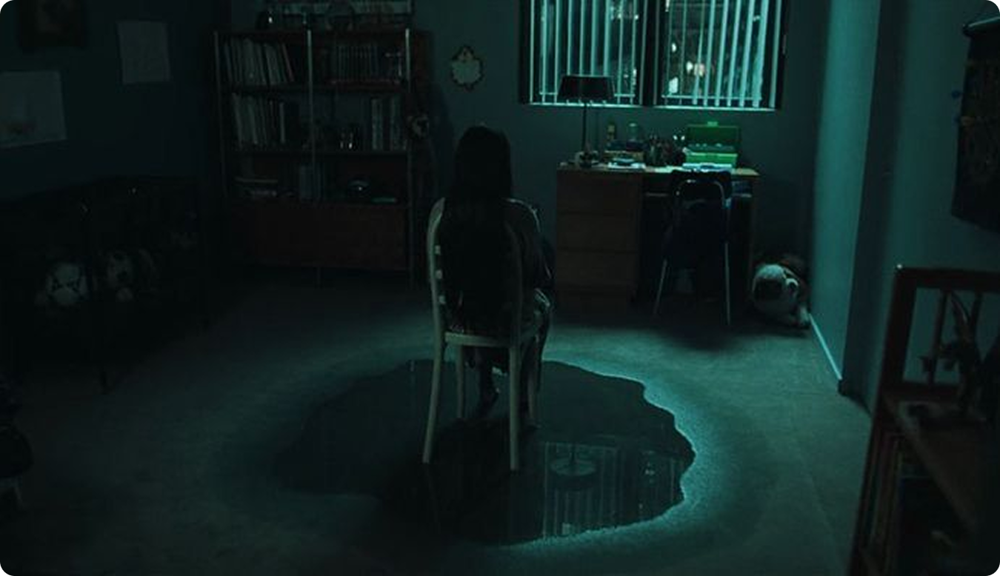
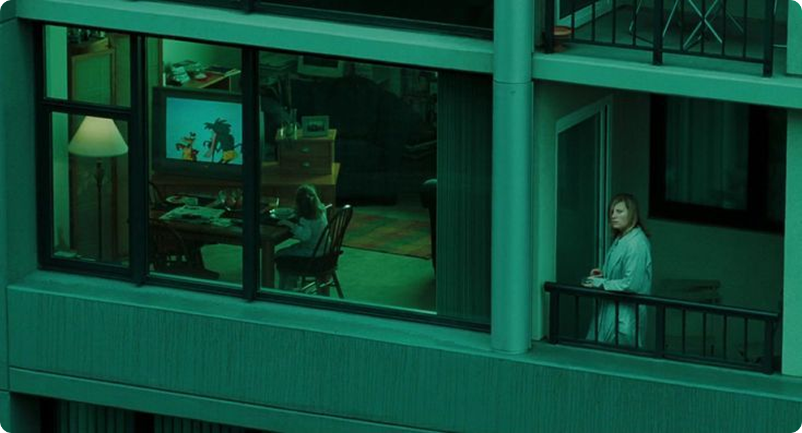
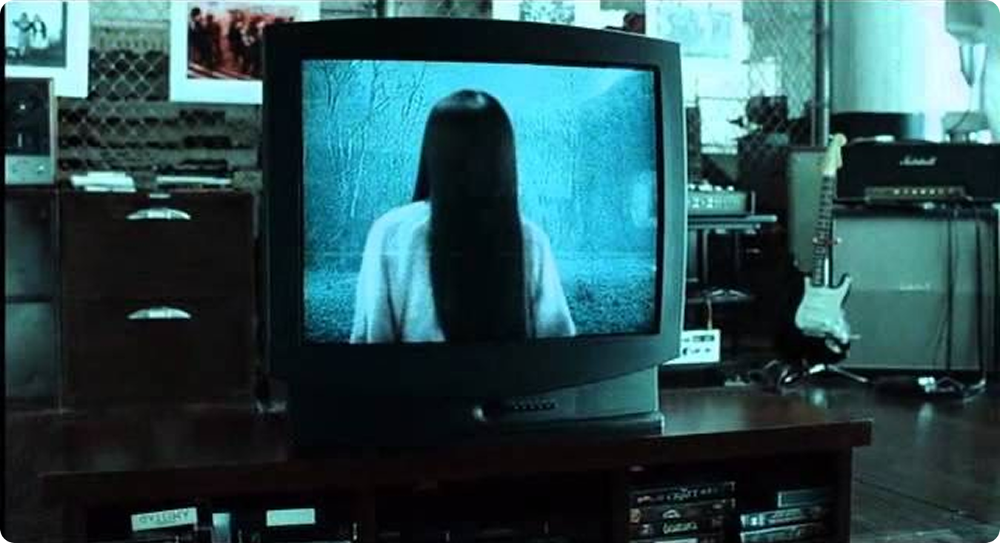

Обратный отсчёт как механизм тревоги
Обратный отсчет выступает одним из ключевых инструментов
создания атмосферы тревоги в фильме. Получив звонок
с сообщением «семь дней» после просмотра
видеокассеты, персонажи оказываются под прессом не просто
сюжетного поворота, а тщательно продуманного механизма
психологического воздействия.
Отсутствие немедленной гибели парадоксальным образом усиливает
страх. Время, дарованное героям, не становится источником
свободы, а напротив, трансформируется в коварную
западню. Каждый прожитый день ощущается как шаг
к неотвратимому. Зритель осознает грядущую катастрофу,
но остается в плену неизвестности относительно
ее времени, места и формы.

На протяжении всего фильма в сознании зрителя пульсирует
одна мысль: время неумолимо. В отличие от большинства
хорроров, где ужас пробуждается в момент столкновения
с угрозой, «Звонок» строит свой страх
на предчувствии. Мы трепещем не столько перед лицом
смерти, сколько перед её предрешённостью. Это похоже на
мучительное ожидание, когда человек ещё живёт своей обычной жизнью
— смеётся, трудится, блуждает по улицам
города — но вся реальность уже отравлена
предвестием гибели.

Холод и визуальная атмосфера
Значительную роль в фильме играет визуальная атмосфера. Мир
представлен в холодной, серо-синей цветовой гамме,
характеризующейся высокой влажностью и ощущением отсутствия
жизни. Композиция кадра изобилует элементами, такими как дождь,
вода, туман и обширные пустые пространства, при этом
освещение остается приглушенным. Цветовая палитра не только
создает мрачное настроение, но и формирует впечатление
деградации реальности. Даже обыденные локации, такие как жилые
комнаты, дороги и больничные коридоры, лишены признаков уюта
и тепла.
Атмосфера тревоги складывается из нескольких визуальных элементов:
- серо-синей палитры, которая делает мир холодным и мёртвым;
- дождя и сырости, дающих ощущение постоянного дискомфорта;
- приглушённого света, из-за чего реальность неустойчива;
- медленного темпа кадров, который усиливает напряжение.


Вода как постоянный образ угрозы
Вода в фильме работает как постоянный источник тревоги. Она
появляется в разных формах: дождь, мокрые волосы, колодец, следы
сырости, странное ощущение затопленности пространства.

Вода связана с Самарой, её смертью и колодцем,
но одновременно она становится общим настроением фильма.
Кажется, что вода просачивается в саму реальность. Она
не нападает, не кричит, не пугает резко,
но делает мир неприятным и нестабильным.

Это хороший пример того, как хоррор может работать через
повторяющийся образ, а не через прямую угрозу.
Проклятое видео — кошмар
Особую силу обретает приём «проклятого видео»
в «Звонке». Пугает не столько отдельный
жуткий кадр, сколько сама иррациональность кассеты. Набор образов
кажется хаотичным, будто выхваченным из неведомых глубин:
лестница, ведущая в никуда, отражение в зеркале, пустой
стул, бездонный колодец, пристальный глаз, причудливые фигуры.
Отсутствие внятного повествования превращает просмотр
в настоящий кошмар. Это похоже на вторжение
в чужую, искаженную память или на обрывки сна,
ускользающие от всякого логического объяснения. Зритель
тщетно пытается ухватить смысл, но натыкается на нечто
поломанное, чуждое человеческому пониманию.
Проклятое видео работает за счёт нескольких приёмов:
- обрывочного монтажа, из-за которого кадры кажутся случайными;
- странных символов, которые невозможно сразу расшифровать;
- плохого качества изображения — повреждённой реальности;
- отсутствия понятной логики, из-за чего видео похоже на кошмар;
- ощущения запретного просмотра.

Плохое качество изображения тоже усиливает тревогу. Шумы, помехи,
зернистость, искажения делают видео не просто старым,
а опасным. Оно выглядит как предмет, который не должен
был попасть в нормальный мир.
Бытовые предметы становятся опасными
Особую жуткость фильму «Звонок» придает то, как
он трансформирует обыденные предметы быта
в предвестников ужаса. Телефон, телевизор, видеомагнитофон,
кассета — эти вещи, обычно олицетворяющие уют дома,
досуг и связь с миром, в руках создателей фильма
становятся каналами, по которым проникает смерть.
Телефонный звонок после просмотра кассеты звучит как приговор.
Телевизор перестаёт быть экраном и становится границей,
которую можно нарушить. От этого появляется ощущение, что
спрятаться негде: опасность приходит не из леса, подвала
или заброшенного дома, а из предметов, стоящих
в гостиной.

Фильм использует страх перед медиа: перед картинкой, которая
влияет на реальность. Видеокассета становится почти живым
объектом: её нельзя просто посмотреть и забыть. После
просмотра начинается цепочка событий, и изображение перестаёт
быть безопасным.
Самара как присутствие, а не просто монстр
Создатели фильма намеренно сдерживают прямое столкновение с
монстром. Самара долгое время остается не столько раскрытым
персонажем, сколько неуловимым присутствием, окутывающим
происходящее. Её имя произносят, её пугающие следы
находят, её трагическую историю собирают по обрывкам.

Сила этого метода превосходит прямое обнажение всех деталей.
Недосказанность же, напротив, даёт волю воображению, позволяя
ему самому ткать полотно ужаса. И зачастую именно эти,
рождённые в глубинах сознания, картины пугают сильнее, чем любое
прямое изображение, ведь они искусно подстраиваются под самые
потаённые страхи зрителя.

Самара пугает не только внешностью. Она страшна тем, что её
невозможно полностью понять и остановить. Она одновременно
жертва, призрак, проклятие и источник насилия.
Детективная структура без чувства безопасности
Темп фильма тоже важен. «Звонок» не спешит.
Расследование Рэйчел развивается постепенно: кассета, жертвы,
фотографии, лошади, остров, история Самары, колодец.

По своей сути, это почти детективная конструкция,
но вместо ощущения власти над ситуацией, каждое новое
открытие лишь глубже погружает героиню в пучину опасности.
Традиционно расследование призвано пролить свет на тайны
и даровать спасение, однако здесь оно неумолимо раскрывает
всё более мрачную и тревожную правду.
Тишина вместо громких ударов
Звуковое оформление фильма вторит его общей атмосфере,
не прибегая к навязчивым громким эффектам. Вместо этого,
оно искусно играет с тишиной, окутывает зрителя едва уловимым
гулом, шелестом и приглушенными звуками. Резкие акустические
акценты, порой неожиданные, но всегда уместные, добавляют
повествованию глубины.

Тревога рождается из ощущения пустоты и натянутости
звукового пространства. В этой гнетущей тишине зритель
невольно замирает в ожидании неизбежного нарушения. Даже
когда на экране царит покой, сцена уже пропитана
предчувствием опасности. Если скример обрушивает страх одним
ударом, то тишина «Звонка» плетет свою паутину
дольше, заставляя зрителя самому вызывать призраков угрозы.
Нарушение границы между экраном и реальностью
Главный приём «Звонка» — это нарушение
границ. Граница между живыми и мёртвыми, между изображением
и реальностью, между домом и местом угрозы, между
прошлым и настоящим постепенно исчезает.


Самара не просто появляется в мире людей. Она приходит
через экран, через запись, через память, через чужое внимание.
Чтобы проклятие сработало, достаточно посмотреть. Это делает
зрителя почти участником механизма: мы тоже смотрим фильм,
тоже видим кассету, тоже включены в визуальный опыт.
Вывод
Именно поэтому «Звонок» пугает даже без навязчивых
скримеров. Фильм не стремится заставить зрителя вздрагивать
каждую минуту. Вместо этого он мастерски нагнетает тревогу:
холодная атмосфера, тягучий темп, неумолимый обратный отсчет,
жуткие образы, обыденные предметы, превратившиеся в источник
страха, и осознание необратимости увиденного.
«Звонок» страшен не самим моментом нападения,
а его неизбежностью.

В этом и кроется его истинная мощь. Скример —
мимолетный удар: вздрагивание, за которым следует облегченный
выдох. «Звонок» же действует иначе.
Он оставляет после себя тягучее, тревожное послевкусие,
словно привычные вещи — экран, телефон, даже знакомый
коридор в родном доме — вдруг обрели зловещий
оттенок. Это хоррор не о внезапном испуге,
а о медленно тлеющем ожидании, о зараженной
атмосфере. Именно поэтому вызванная им тревога проникает
глубже и держится дольше, чем сам мимолетный страх.